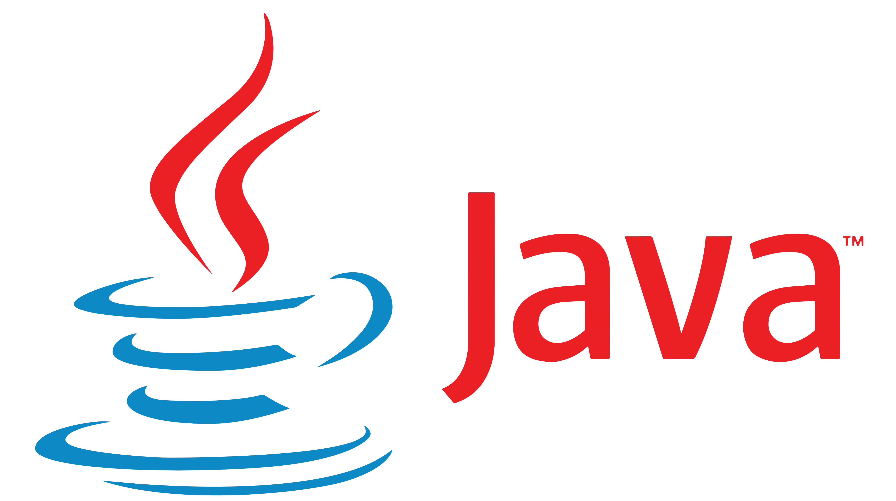
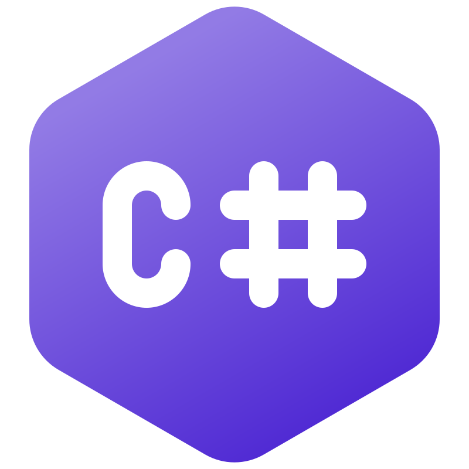

O Python é uma linguagem de programação amplamente usada em aplicações da Web, desenvolvimento de software, ciência de dados e machine learning (ML). Os desenvolvedores usam o Python porque é eficiente e fácil de aprender e pode ser executada em muitas plataformas diferentes. O software Python pode ser baixado gratuitamente, integra-se bem a todos os tipos de sistema e agiliza o desenvolvimento.
Java
Java é uma linguagem de programação amplamente usada para codificar aplicações Web. Ela tem sido uma escolha popular entre os desenvolvedores há mais de duas décadas, com milhões de aplicações Java em uso hoje. Java é uma linguagem multiplataforma, orientada a objetos e centrada em rede que pode ser usada como uma plataforma em si. É uma linguagem de programação rápida, segura e confiável para codificar tudo, desde aplicações móveis e software empresarial até aplicações de big data e tecnologias do servidor.
C#
C# é uma linguagem de programação moderna e de propósito geral desenvolvida pela Microsoft. Lançada em 2000, ela se destaca pela sua sintaxe intuitiva, orientação a objetos robusta e pela integração com a plataforma .NET, o que a torna uma escolha popular para o desenvolvimento de uma ampla variedade de aplicativos, desde aplicativos de desktop até aplicativos web e móveis. Sua forte tipagem estática e suporte a gerenciamento de memória automático contribuem para a segurança e confiabilidade do código. Com uma comunidade ativa e uma ampla gama de recursos disponíveis, C# continua a ser uma escolha poderosa para programadores em todo o mundo.
R
R é uma linguagem de programação de código aberto e ambiente de software amplamente utilizado para estatísticas e análise de dados. Desenvolvido inicialmente por estatísticos, o R oferece uma vasta gama de funcionalidades para manipulação, visualização e modelagem de dados. Sua popularidade crescente se deve em parte à sua flexibilidade e extensibilidade, permitindo aos usuários criar e compartilhar facilmente pacotes e extensões para atender às necessidades específicas de análise de dados. Com uma comunidade ativa de usuários e uma biblioteca de pacotes em constante expansão, o R continua a ser uma escolha proeminente para cientistas de dados, estatísticos e pesquisadores em diversas áreas.
Home | Músicas para programação | Aulas grátis | Planos | Contato |